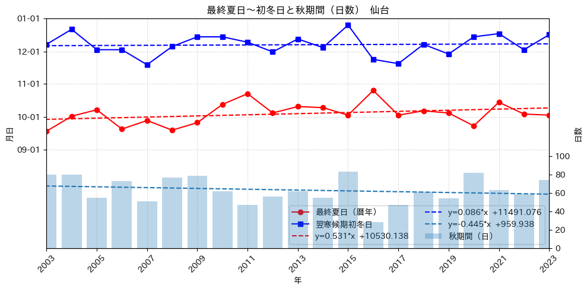
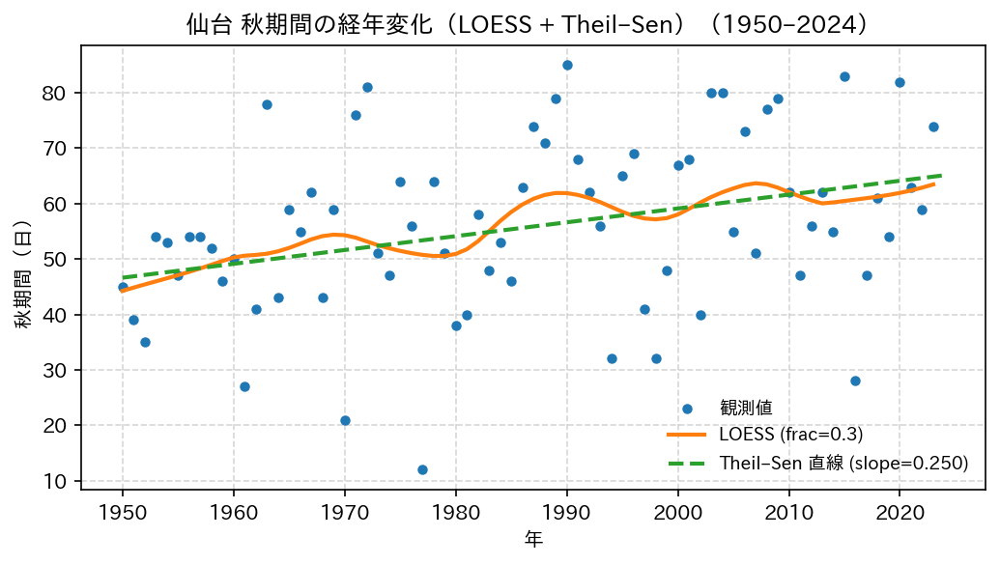
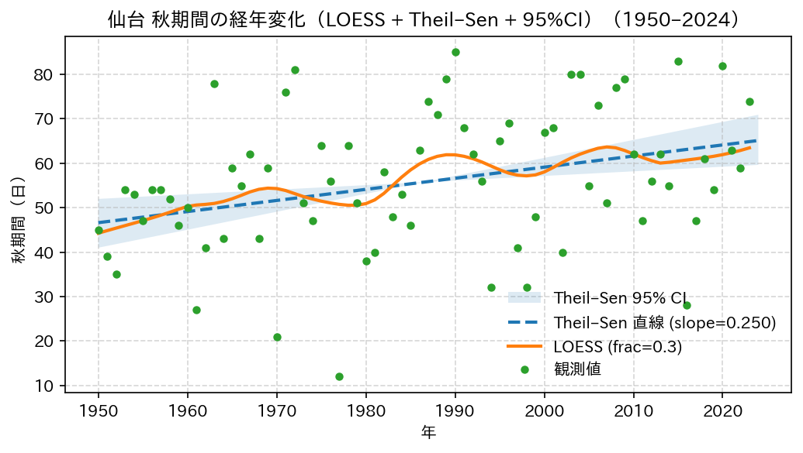
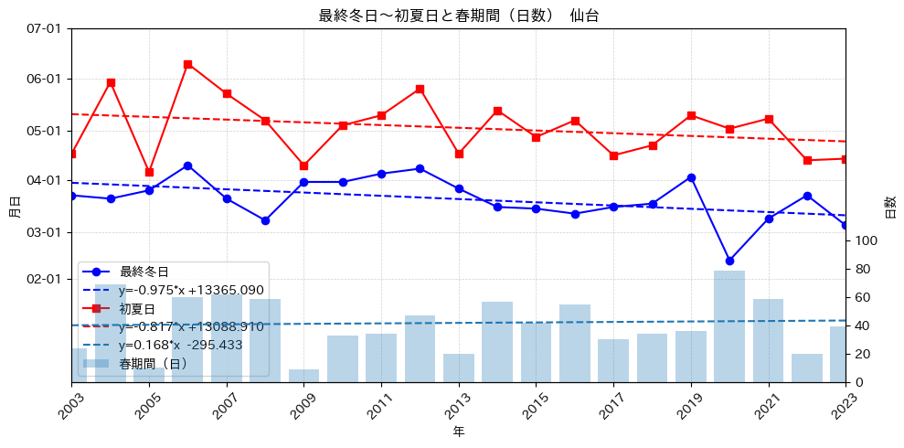
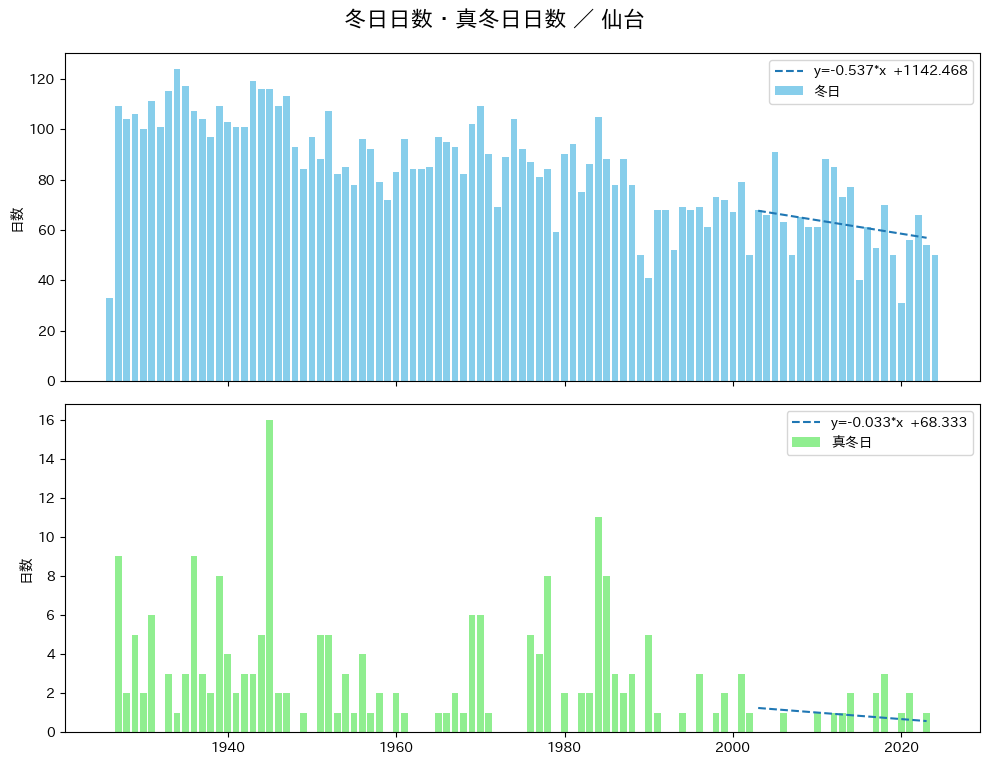

%load_ext autoreload
%autoreload 2
from meteo_lib import PROJECT # または: from meteo_lib.paths import PROJECT
from meteo_lib.my_path_utils import DATA, OUTimport pandas as pd
import matplotlib.pyplot as plt
import numpy as np
from matplotlib.dates import DateFormatter
import datetime as dt
import matplotlib.dates as mdates
import matplotlib as mpl
mpl.rcParams["font.family"] = "IPAexGothic" # 例：Noto Sans CJK JP でも可
mpl.rcParams["axes.unicode_minus"] = False # －が豆腐になるのを回避
import pymannkendall as mk
place = '仙台'
start_year, end_year = 1926, 2024
Path = OUT / f'日毎データ_{place}_summary.parquet'
df = pd.read_parquet(Path)# ---- 秋期間の図化 ----
# summary: DataFrame に以下の列があること:
# 年, 最終夏日, 初冬日, 秋期間
REF_YEAR = 2001
FALL_COL = "秋期間" # ←計算済みの列名をそのまま使用
df = df.copy().sort_values("年").reset_index(drop=True)
df["翌寒候期初冬日"] = df["初冬日"].shift(-1) # 折れ線用：翌シーズンの初冬日
def to_refdate(s: pd.Series) -> pd.Series:
# 年を消して「月日だけ」を基準年に載せ替え（NaTはNaTのまま）
return pd.to_datetime(
np.where(s.notna(), s.dt.strftime(f"{REF_YEAR}" + "-%m-%d"), pd.NaT),
errors="coerce"
)
final_summer_ref = to_refdate(df["最終夏日"])
next_first_winter_ref = to_refdate(df["翌寒候期初冬日"])
x = df["年"].astype(int).values
fig, ax1 = plt.subplots(figsize=(10, 5))
# 左軸：月日（折れ線）
ax1.plot(x, final_summer_ref, marker="o", color="red", label="最終夏日（暦年）")
ax1.plot(x, next_first_winter_ref, marker="s", color="blue", label="翌寒候期初冬日")
ax1.set_ylabel("月日")
ax1.yaxis.set_major_formatter(DateFormatter("%m-%d"))
ax1.set_xlabel("年")
x_min, x_max = 2003, 2023 # x軸表示範囲
ax1.set_xlim(x_min, x_max)
ticks = range(int(x_min), int(x_max)+1, 2)
ax1.set_xticks(ticks)
ax1.tick_params(axis='x', labelrotation=45)
y1_min = dt.date(REF_YEAR, 6, 1)
y1_max = dt.date(REF_YEAR + 1, 1, 1)
ax1.set_ylim(y1_min, y1_max)
# --- y軸ラベルを9月〜12月の1か月ごとに ---
tick_dates = pd.date_range(start=f"{REF_YEAR}-09-01", end=f"{REF_YEAR + 1}-01-01", freq="MS")
#tick_dates = pd.date_range(start=f"{REF_YEAR}-09-01", end=f"{REF_YEAR}-12-01", freq="MS")
# --- 回帰用：日付→float（日数）
y_fit_num_s = mdates.date2num(final_summer_ref) # NaT → NaN
y_fit_num_w = mdates.date2num(next_first_winter_ref) # NaT → NaN
# x が範囲内のマスク
mask_x = (x >= x_min) & (x <= x_max)
# 欠損を除いたインデックスを作る（少なくとも2点必要）
mask_s = np.isfinite(y_fit_num_s)
mask_w = np.isfinite(y_fit_num_w)
# ANDで統合
mask_s_use = mask_s & mask_x
mask_w_use = mask_w & mask_x
if mask_s.sum() >= 2:
a_s, b_s = np.polyfit(x[mask_s_use], y_fit_num_s[mask_s_use], 1)
y_line_num_s = a_s * x + b_s
y_line_dt_s = mdates.num2date(y_line_num_s)
ax1.plot(x, y_line_dt_s, linestyle="--", color="red",
label=f'y={a_s:.3f}*x {b_s:+.3f}')
else:
print("最終夏日の回帰は有効データ点が不足のためスキップ")
if mask_w.sum() >= 2:
a_w, b_w = np.polyfit(x[mask_w_use], y_fit_num_w[mask_w_use], 1)
y_line_num_w = a_w * x + b_w
y_line_dt_w = mdates.num2date(y_line_num_w)
ax1.plot(x, y_line_dt_w, linestyle="--", color="blue",
label=f'y={a_w:.3f}*x {b_w:+.3f}')
else:
print("初冬日の回帰は有効データ点が不足のためスキップ")
ax1.set_yticks(tick_dates)
ax1.yaxis.set_major_formatter(mdates.DateFormatter("%m-%d"))
# 右軸：秋期間（日）（棒）
ax2 = ax1.twinx()
y = pd.to_numeric(df[FALL_COL], errors='coerce').fillna(0.0)
ax2.bar(x, y.values.astype("float"), alpha=0.3, label="秋期間（日）")
ax2.set_ylabel("日数")
ax2.set_ylim(0, 250)
ticks = list(range(0, 101, 20))
ax2.set_yticks(ticks)
x_use = x[mask_x]
y_use = y[mask_x]
a, b = np.polyfit(x_use, y_use, 1)
y = a * x + b
ax2.plot(x, y, linestyle="--", label=f'y={a:.3f}*x {b:+.3f}')
# 凡例（統合）
handles, labels = [], []
for ax in (ax1, ax2):
h, l = ax.get_legend_handles_labels()
handles += h; labels += l
seen, h2, l2 = set(), [], []
for h, l in zip(handles, labels):
if l not in seen:
seen.add(l); h2.append(h); l2.append(l)
ax1.legend(h2, l2, loc="lower right", ncol=2)
ax1.grid(True, linestyle="--", linewidth=0.5, alpha=0.6)
plt.title(f"最終夏日〜初冬日と秋期間（日数） {place}")
plt.tight_layout()
#plt.savefig(OUT / f'{place}_{start_year}-{end_year}_秋日数.png')
plt.savefig(OUT / f'{place}_{x_min}-{x_max}_秋日数.png')
plt.show()
# Theil-Sen estimator
def sens_slope(x, t):
x = np.asarray(x, dtype=float)
t = np.asarray(t, dtype=float)
mask = np.isfinite(x) & np.isfinite(t)
x = x[mask]
t = t[mask]
n = len(x)
if n < 2:
raise ValueError("データ点が少なすぎます。")
slopes = []
for i in range(n-1):
for j in range(i+1, n):
if t[j] != t[i]:
slopes.append((x[j] - x[i]) / (t[j] - t[i]))
slopes = np.array(slopes)
slope = np.median(slopes)
intercept = np.median(x - slope * t)
return slope, interceptdef sens_slope_resid_bootstrap_ci(x, t, B=2000, alpha=0.05, random_state=None):
"""
Theil–Sen slope の残差ブートストラップ CI（percentile 法）
Parameters
----------
x : array-like
観測値（例：秋期間）
t : array-like
年（例：1950, 1951, ...）
B : int
ブートストラップ回数
alpha : float
有意水準（0.05 → 95% CI）
random_state : int or None
乱数シード（再現性用）
Returns
-------
slope0 : float
元データでの Theil–Sen slope
ci_low : float
傾きの下側信頼限界
ci_high : float
傾きの上側信頼限界
"""
x = np.asarray(x, dtype=float)
t = np.asarray(t, dtype=float)
mask = np.isfinite(x) & np.isfinite(t)
x = x[mask]
t = t[mask]
n = len(x)
if n < 2:
raise ValueError("データ点が少なすぎます。")
rng = np.random.default_rng(random_state)
# 1) 元データでの Theil–Sen slope と切片
slope0, intercept0 = sens_slope(x, t)
# 2) 残差を計算
y_hat = slope0 * t + intercept0
resid = x - y_hat
# 3) ブートストラップ
boot_slopes = np.empty(B)
for b in range(B):
# 残差を復元抽出
e_star = rng.choice(resid, size=n, replace=True)
# トレンド + 再サンプル残差 で疑似時系列を作る
x_star = y_hat + e_star
# 年はそのまま t を使う → 時系列構造を保持
sb, _ = sens_slope(x_star, t)
boot_slopes[b] = sb
# 4) パーセンタイル CI
ci_low = np.percentile(boot_slopes, 100 * alpha/2)
ci_high = np.percentile(boot_slopes, 100 * (1 - alpha/2))
print(f"Sen's slope = {slope0:.3f}")
print(f"{int((1-alpha)*100)}% CI = [{ci_low:.3f}, {ci_high:.3f}]")
return slope0, ci_low, ci_high# Mann-Kendall test
# start_year–end_year のデータを対象とする
year_min = 1950
year_max = 2024
years = df["年"].to_numpy()
x = df["秋期間"].to_numpy()
mask_range = (df['年'] >= year_min) & (df['年'] <= year_max)
mask_al = mask_range & df["秋期間"].notna()
years_al = df.loc[mask_al, "年"].to_numpy()
x_al = df.loc[mask_al, "秋期間"].to_numpy()
r_o_al = mk.original_test(x_al)
r_h_al = mk.hamed_rao_modification_test(x_al)
print(r_o_al)
print(r_h_al)
slope0, lo, hi = sens_slope_resid_bootstrap_ci(
x_al, years_al,
B=5000, alpha=0.05, random_state=42
)Mann_Kendall_Test(trend='increasing', h=True, p=0.003025739944670258, z=2.9651107361188873, Tau=0.23546834505738615, s=636.0, var_s=45863.333333333336, slope=0.25, intercept=45.875)
Modified_Mann_Kendall_Test_Hamed_Rao_Approach(trend='increasing', h=True, p=0.000325476769696742, z=3.5941304305404294, Tau=0.23546834505738615, s=636.0, var_s=31214.744428291076, slope=0.25, intercept=45.875)
Sen's slope = 0.250
95% CI = [0.103, 0.404]from statsmodels.nonparametric.smoothers_lowess import lowess
def sens_slope(x, t):
x = np.asarray(x, dtype=float)
t = np.asarray(t, dtype=float)
mask = np.isfinite(x) & np.isfinite(t)
x = x[mask]
t = t[mask]
n = len(x)
if n < 2:
raise ValueError("データ点が少なすぎます。")
slopes = []
for i in range(n-1):
for j in range(i+1, n):
if t[j] != t[i]:
slopes.append((x[j] - x[i]) / (t[j] - t[i]))
slopes = np.array(slopes)
slope = np.median(slopes)
intercept = np.median(x - slope * t)
return slope, intercept
def plot_loess_theilsen(
years,
values,
title="",
ylabel="",
year_min=None,
year_max=None,
loess_frac=0.3,
outpath=None,
):
"""
年次データに対して
・散布図（観測値）
・LOESS 曲線
・Theil–Sen 直線
を重ねて表示する。
"""
years = np.asarray(years, dtype=float)
values = np.asarray(values, dtype=float)
# NaN 除去
mask = np.isfinite(years) & np.isfinite(values)
years = years[mask]
values = values[mask]
# 年順にソート
order = np.argsort(years)
years = years[order]
values = values[order]
if year_min is None:
year_min = int(years.min())
if year_max is None:
year_max = int(years.max())
# 対象期間だけに絞る
mask_period = (years >= year_min) & (years <= year_max)
yy = years[mask_period]
xx = values[mask_period]
# Theil–Sen 傾き・切片
slope, intercept = sens_slope(xx, yy)
# LOESS 平滑
# lowess は (y, x) の順なので注意
loess_res = lowess(xx, yy, frac=loess_frac, it=0, return_sorted=True)
loess_x = loess_res[:, 0] # 年
loess_y = loess_res[:, 1] # 平滑値
# Theil–Sen 直線用
x_line = np.linspace(year_min, year_max, 200)
y_line = slope * x_line + intercept
# プロット
fig, ax = plt.subplots(figsize=(7, 4), dpi=150)
# 観測値
ax.plot(yy, xx, "o", markersize=4, label="観測値")
# LOESS 曲線
ax.plot(loess_x, loess_y, "-", linewidth=2, label=f"LOESS (frac={loess_frac})")
# Theil–Sen 直線
ax.plot(x_line, y_line, "--", linewidth=2, label=f"Theil–Sen 直線 (slope={slope:.3f})")
ax.set_xlabel("年")
ax.set_ylabel(ylabel)
if title:
ax.set_title(title + f"（{year_min}–{year_max}）")
ax.grid(True, linestyle="--", alpha=0.5)
ax.legend(frameon=False, fontsize=9)
fig.tight_layout()
if outpath is not None:
fig.savefig(outpath, bbox_inches="tight")
print("→ 図を保存しました:", outpath)
return fig, ax, slope# 年でソートしておく
df = df.sort_values("年")
mask = (df["年"] >= 1950) & (df["年"] <= 2024)
years_al = df.loc[mask, "年"].to_numpy()
x_al = df.loc[mask, "秋期間"].to_numpy()
fig, ax, slope = plot_loess_theilsen(
years_al,
x_al,
title="仙台 秋期間の経年変化（LOESS + Theil–Sen）",
ylabel="秋期間（日）",
year_min=1950,
year_max=2024,
loess_frac=0.3,
outpath=OUT / "Sendai_autumn_LOESS_TheilSen_1950_2024.png",
)→ 図を保存しました: /Users/takumi/Projects/JMA-data/outputs/Sendai_autumn_LOESS_TheilSen_1950_2024.png
import numpy as np
import matplotlib.pyplot as plt
from statsmodels.nonparametric.smoothers_lowess import lowess
def plot_loess_theilsen_with_ci(
years,
values,
title="",
ylabel="",
year_min=None,
year_max=None,
loess_frac=0.3,
B=5000,
alpha=0.05,
random_state=42,
outpath=None,
):
years = np.asarray(years, dtype=float)
values = np.asarray(values, dtype=float)
# NaN 除去
mask = np.isfinite(years) & np.isfinite(values)
years = years[mask]
values = values[mask]
# 年順にソート
order = np.argsort(years)
years = years[order]
values = values[order]
if year_min is None:
year_min = int(years.min())
if year_max is None:
year_max = int(years.max())
# 対象区間
mask_period = (years >= year_min) & (years <= year_max)
yy = years[mask_period]
xx = values[mask_period]
# --- Theil–Sen slope と CI ---
slope0, intercept0 = sens_slope(xx, yy)
# 中央年でアンカー
t0 = yy.mean()
y0 = slope0 * t0 + intercept0
# ブートストラップで CI
slope0_bs, ci_low, ci_high = sens_slope_resid_bootstrap_ci(
xx, yy, B=B, alpha=alpha, random_state=random_state
)
slope0 = slope0_bs
# x 軸
x_line = np.linspace(year_min, year_max, 200)
# 3 本の線（中心年 t0 で揃える）
y_mid = y0 + slope0 * (x_line - t0)
y_low = y0 + ci_low * (x_line - t0)
y_high = y0 + ci_high * (x_line - t0)
# --- LOESS ---
loess_res = lowess(xx, yy, frac=loess_frac, it=0, return_sorted=True)
loess_x = loess_res[:, 0]
loess_y = loess_res[:, 1]
# --- 図作成（ここで初めて ax が出てくる） ---
fig, ax = plt.subplots(figsize=(7, 4), dpi=150)
# CI 帯
ax.fill_between(x_line, y_low, y_high, alpha=0.15, label="Theil–Sen 95% CI")
# 中央線
ax.plot(x_line, y_mid, "--", lw=2, label=f"Theil–Sen 直線 (slope={slope0:.3f})")
# LOESS
ax.plot(loess_x, loess_y, "-", lw=2, label=f"LOESS (frac={loess_frac})")
# 観測値
ax.plot(yy, xx, "o", markersize=4, label="観測値")
ax.set_xlabel("年")
ax.set_ylabel(ylabel)
ax.set_title(f"{title}（{year_min}–{year_max}）")
ax.grid(True, linestyle="--", alpha=0.5)
ax.legend(frameon=False)
fig.tight_layout()
if outpath is not None:
fig.savefig(outpath, bbox_inches="tight")
print("→ 図を保存しました:", outpath)
return fig, ax, slope0, ci_low, ci_high# 年でソートしておく
df = df.sort_values("年")
mask = (df["年"] >= 1950) & (df["年"] <= 2024)
years_al = df.loc[mask, "年"].to_numpy()
x_al = df.loc[mask, "秋期間"].to_numpy()
fig, ax, slope0, lo, hi = plot_loess_theilsen_with_ci(
years_al,
x_al,
title="仙台 秋期間の経年変化（LOESS + Theil–Sen + 95%CI）",
ylabel="秋期間（日）",
year_min=1950,
year_max=2024,
loess_frac=0.3,
B=5000,
alpha=0.05,
random_state=42,
outpath=OUT / "Sendai_autumn_LOESS_TheilSen_CI_1950_2024.png",
)
print("Sen's slope =", slope0)
print("95% CI =", lo, hi)Sen's slope = 0.250
95% CI = [0.103, 0.404]
→ 図を保存しました: /Users/takumi/Projects/JMA-data/outputs/Sendai_autumn_LOESS_TheilSen_CI_1950_2024.png
Sen's slope = 0.25
95% CI = 0.10344359070464768 0.4044307809330626
# ---- 春期間の図化 ----
# summary: DataFrame に以下の列があること:
# 年, 最終冬日, 初夏日, 春期間
REF_YEAR = 2001
FALL_COL = "春期間" # ←計算済みの列名をそのまま使用
df = df.copy().sort_values("年").reset_index(drop=True)
#df["翌寒候期初冬日"] = df["初冬日"].shift(-1) # 折れ線用：翌シーズンの初冬日
def to_refdate(s: pd.Series) -> pd.Series:
# 年を消して「月日だけ」を基準年に載せ替え（NaTはNaTのまま）
return pd.to_datetime(
np.where(s.notna(), s.dt.strftime(f"{REF_YEAR}" + "-%m-%d"), pd.NaT),
errors="coerce"
)
final_winter_ref = to_refdate(df["最終冬日"])
first_summer_ref = to_refdate(df["初夏日"])
x = df["年"].astype(int).values
x_min = 2003
x_max = 2023
# x が範囲内のマスク
mask_x = (x >= x_min) & (x <= x_max)
fig, ax1 = plt.subplots(figsize=(10, 5))
# 左軸：月日（折れ線）
# y は datetime（NaT を含む想定）
ax1.plot(x, final_winter_ref, marker="o", color="blue", label="最終冬日")
ax1.set_xlim(x_min, x_max)
ticks = range(int(x_min), int(x_max)+1, 2)
ax1.set_xticks(ticks)
y_dt = pd.to_datetime(final_winter_ref)
# 欠損を除外し、x と y の長さを揃える
mask = y_dt.notna() & mask_x
x_fit = np.asarray(x, dtype=float)[mask]
y_fit = mdates.date2num(y_dt[mask]) # ← 日付 → float（日単位）
# 点が2つ以上ある時だけ回帰
if x_fit.size >= 2:
a, b = np.polyfit(x_fit, y_fit, 1)
y_line = a * x_fit + b
# 描画は datetime に戻す
ax1.plot(x_fit, mdates.num2date(y_line), color="blue", linestyle="--",
label=f"y={a:.3f}*x {b:+.3f}")
else:
print("[DEBUG] winter fit skipped (<2 points)")
ax1.plot(x, first_summer_ref, marker="s", color="red", label="初夏日")
# y は datetime（NaT を含む想定）
y_dt = pd.to_datetime(first_summer_ref)
# 欠損を除外し、x と y の長さを揃える
mask = y_dt.notna() & mask_x
x_fit = np.asarray(x, dtype=float)[mask]
y_fit = mdates.date2num(y_dt[mask]) # ← 日付 → float（日単位）
# 点が2つ以上ある時だけ回帰
if x_fit.size >= 2:
a, b = np.polyfit(x_fit, y_fit, 1)
y_line = a * x_fit + b
# 描画は datetime に戻す
ax1.plot(x_fit, mdates.num2date(y_line), color="red", linestyle="--",
label=f"y={a:.3f}*x {b:+.3f}")
else:
print("[DEBUG] winter fit skipped (<2 points)")
ax1.set_ylabel("月日")
ax1.yaxis.set_major_formatter(DateFormatter("%m-%d"))
ax1.set_xlabel("年")
ax1.tick_params(axis='x', labelrotation=45)
y1_min = dt.date(REF_YEAR - 1, 12, 1)
y1_max = dt.date(REF_YEAR, 7, 1)
ax1.set_ylim(y1_min, y1_max)
# --- y軸ラベルを3月〜6月の1か月ごとに ---
tick_dates = pd.date_range(start=f"{REF_YEAR}-02-01", end=f"{REF_YEAR}-07-01", freq="MS")
#tick_dates = pd.date_range(start=f"{REF_YEAR}-09-01", end=f"{REF_YEAR}-07-01", freq="MS")
ax1.set_yticks(tick_dates)
ax1.yaxis.set_major_formatter(mdates.DateFormatter("%m-%d"))
# 右軸：春期間（日）（棒）
ax2 = ax1.twinx()
y = pd.to_numeric(df[FALL_COL], errors='coerce').fillna(0.0)
ax2.bar(x, y.values.astype("float"), alpha=0.3, label="春期間（日）")
x = x[mask_x]
y = y[mask_x]
a, b = np.polyfit(x, y.values.astype("float"), 1)
y = a * x + b
ax2.plot(x, y, linestyle="--", label=f'y={a:.3f}*x {b:+.3f}')
ax2.set_ylabel("日数")
ax2.set_ylim(0, 250)
ticks = list(range(0, 101, 20))
ax2.set_yticks(ticks)
# 凡例（統合）
handles, labels = [], []
for ax in (ax1, ax2):
h, l = ax.get_legend_handles_labels()
handles += h; labels += l
seen, h2, l2 = set(), [], []
for h, l in zip(handles, labels):
if l not in seen:
seen.add(l); h2.append(h); l2.append(l)
#ax1.legend(h2, l2, loc="best")
ax1.legend(h2, l2, loc='lower left')
ax1.grid(True, linestyle="--", linewidth=0.5, alpha=0.6)
plt.title(f"最終冬日〜初夏日と春期間（日数） {place}")
plt.tight_layout()
plt.savefig(OUT / f'{place}_{start_year}-{end_year}_春日数.png')
plt.show()
# ---- 夏日・真夏日・猛暑日の推移 ----
# summary: DataFrame に以下の列があること:
# 年, 夏日日数, 真夏日日数, 猛暑日日数
df = df.copy().sort_values("年").reset_index(drop=True)
fig, axes = plt.subplots(nrows=3, ncols=1, figsize=(10, 12), sharex=True)
labels = ["夏日", "真夏日", "猛暑日"]
colors = ["skyblue", "lightgreen", "salmon"]
for ax, col, lab in zip(axes, ["夏日日数", "真夏日日数", "猛暑日日数"], labels):
ax.bar(df["年"], df[col], color=colors.pop(0), label=lab)
a, b = np.polyfit(df["年"], df[col], 1)
y = a * x + b
ax.plot(x, y, linestyle="--", label=f'y={a:.3f}*x {b:+.3f}')
ax.set_ylabel("日数")
ax.legend()
fig.suptitle(f'夏日日数〜猛暑日日数 ／ {place}', fontsize=16, y=0.95)
fig.tight_layout(rect=[0, 0, 1, 0.96])
plt.savefig(OUT / f'{place}_{start_year}-{end_year}_夏日日数.png')
plt.show()
#fig
# ---- 冬日・真冬日の日数 ----
# summary: DataFrame に以下の列があること:
# 年, 冬日日数, 真冬日日数
df = df.copy().sort_values("年").reset_index(drop=True)
fig, axes = plt.subplots(nrows=2, ncols=1, figsize=(10, 8), sharex=True)
labels = ["冬日", "真冬日"]
colors = ["skyblue", "lightgreen"]
for ax, col, lab in zip(axes, ["冬日日数", "真冬日日数"], labels):
ax.bar(df["年"], df[col], color=colors.pop(0), label=lab)
a, b = np.polyfit(df["年"], df[col], 1)
y = a * x + b
ax.plot(x, y, linestyle="--", label=f'y={a:.3f}*x {b:+.3f}')
ax.set_ylabel("日数")
ax.legend()
fig.suptitle(f'冬日日数・真冬日日数 ／ {place}', fontsize=16, y=0.95)
fig.tight_layout(rect=[0, 0, 1, 0.96])
plt.savefig(OUT / f'{place}_{start_year}-{end_year}_冬日日数.png')
plt.show()
#fig